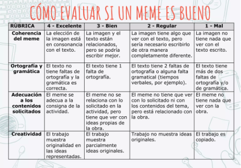

Sancho no para de pegar la hebra...
En la lengua se producen algunos fenómenos que propician la existencia de palabras que se pronuncian o se escriben de forma parecida. Las palabras homófonas son aquellas que se pronuncian igual, pero tienen significados diferentes y también se escriben de forma diferente, lo que provoca errores en la escritura, sobre todo cuando se desconoce su origen, su significado y su forma. Algo que, desde luego, le ocurre a Sancho...
¿"Sino" o "si no", "Bello" o "vello", "A ver" o "haber", ""vaya", "valla" o "baya"?... ¡Difícil elección! Este será nuestro cuarto reto.
Aprendemos
 Vamos a repasar algunas palabras homófonas con la presentación
Vamos a repasar algunas palabras homófonas con la presentación  "Difícil elección".
"Difícil elección".
Jugamos
Ahora nos divertimos con un juego online que será muy útil para recordar casos de palabras homófonas como los que acabamos de estudiar. Se llama: "¿Cómo dice que dijo?". Intenta lograr la máxima puntuación, jugando en tu tiempo libre tantas veces como necesites, y envía un pantallazo a la profesora por correo electrónico con, al menos, 60 puntos. Se añadirán a tu  Cartilla del brigadista.
Cartilla del brigadista.
Creamos
Ha llegado el momento de crear.
Ampliaremos nuestros conocimientos sobre homófonos y, después, los plasmaremos en un meme.
Y estos son algunos enlaces que podemos consultar:
- "Homonimia: palabras homófonas y homógrafas".
- "Lista de palabras que plantean problemas ortográficos".
La herramienta que utilizaremos puede ser iloveimg.com o cualquier otra de las propuestas en esta página, donde además nos explican las claves para crear un buen chiste gráfico de este estilo.
Recordemos que solo debemos utilizar imágenes o iconos con licencia CC (Creative Commons). El documento  "Búsqueda de imágenes con licencia CC" nos indica dónde encontrar este tipo de imágenes.
"Búsqueda de imágenes con licencia CC" nos indica dónde encontrar este tipo de imágenes.
Evaluamos
La evaluación la hará el profesor o profesora mediante esta  rúbrica:
rúbrica:

Cuando hayamos terminado el meme, lo subimos a Classroom, en la tarea correspondiente.
Por último, anotamos los puntos conseguidos en nuestra Cartilla del brigadista.
Entablar conversación sin haberlo premeditado o prolongar una conversación por más tiempo del conveniente.